Joaquin Garcia
How to read this page: every section is a table of claim, evidence, and how to verify. Claims marked verifiable can be checked by running the repo or opening the linked file. Claims marked stated rest on the candidate's word and should be probed in an interview. Nothing here is a persuasive summary; the human version is.
1. Identity
| name | Joaquin Garcia |
| current_role | Account Executive, payments company (employer intentionally unnamed), since 2026-02. Sells card processing to owner-operated local businesses. |
| seeking | GTM Engineer; Sales Development / Outbound Manager or Director |
| location_constraint | Remote, or on-site in California |
| contact | joaquingarcia7@yahoo.com · linkedin.com/in/joaquin-garcia-218578b9 · github.com/layllabs |
| canonical_urls | this page; github.com/layllabs/GTM-Engine |
2. Experience
| period | company | role | attainment | status |
|---|---|---|---|---|
| 2026-02 to present | payments company (unnamed) | Account Executive | not reported; long onboarding, full quota from December 2026 | stated |
| 2024-10 to 2026-02 | Shopify | SDR | 180% | stated, matches LinkedIn |
| 2022-02 to 2024-10 | LogicMonitor | Sr. BDR, promoted to Associate AE | 130% | stated, matches LinkedIn |
| 2021-02 to 2022-02 | Medallia | SDR, hospitality vertical | 115% avg | stated, matches LinkedIn |
References available on request; not published here.
3. Featured project: GTM Engine

Source: docs/architecture.md (Mermaid). The alt text above is the full diagram in one sentence for non-visual readers.
| repo | github.com/layllabs/GTM-Engine, MIT, Python 3.11+, standard library only |
| one_line | Signal-based outbound pipeline for selling to local merchants: discover events, dedupe across sources, score against configurable ICPs with written reasons, route to email/call/visit, render and lint copy, classify replies, check deliverability. |
| run | git clone https://github.com/layllabs/GTM-Engine && cd GTM-Engine && python -m gtm run |
| expected_output | 28 signals to 23 accounts; tiers A 8 / B 8 / C 3 / DQ 4; 52 drafts, 0 failing lint; 9 reply labels; 1 domain flagged for retirement. Writes examples/output/scoreboard.md. |
| what_is_not_public | Discovery scrapers (permit portals, state filings, maps, forum posts), email verifier integration, sequencer integration, CRM sync, LLM API client. These exist in the production version and are not published because they are tied to the employer's stack. The public version reads CSV/JSON in the same shapes. |
| claim | evidence | verify | |
|---|---|---|---|
| Scores carry plain-English reasons; none is a black box | gtm/score.py, reasons required by account.schema.json | test_every_scored_account_explains_itself | verifiable |
| Routing is config, not code; no account without an email is ever enrolled | config/routing.json, gtm/route.py | test_no_email_never_enrolls, test_partner_without_email_goes_to_call_first | verifiable |
| CRM lifecycle is a validated state machine with an append-only event log, and the Mermaid diagram is kept in sync with the code by a test | gtm/lifecycle.py, docs/crm/lifecycle.md | test_mermaid_diagram_matches_code | verifiable |
| Copy is linted (em dashes, unfilled variables, length, links, questions, spam phrases, subject length) and lint failure blocks enrollment | gtm/copywriting.py lint(), gtm/pipeline.py step 5 | python -m gtm lint-copy (38 combinations, 0 failing) | verifiable |
| Deliverability: bounce 2% / complaint 0.1% pause lines, 14-day warmup floor, 30 sends/mailbox/day, domain retired at 2 paused mailboxes | config/deliverability.json, gtm/health.py | python -m gtm health; test_domain_retired_when_two_boxes_paused | verifiable |
| A/B variants are judged on positive-reply rate with a two-proportion z-test; no winner declared below |z| 1.96 | gtm/health.py check_variants | test_variant_verdict_not_significant_on_small_sample, ..._significant_on_large_sample | verifiable |
| Reply handling is rules-first; the model only sees low-confidence cases; every model output has a JSON schema and a non-model fallback | gtm/replies.py, prompts/, schemas/reply.schema.json | python -m gtm eval-replies (28 labeled cases, CI fails under 90%); per-case results in docs/eval_results.md | verifiable |
| Dedupe is transitive across phone, domain and name+city; same name in two cities does not merge | gtm/dedupe.py | test_merges_across_sources, test_same_name_different_city_does_not_merge | verifiable |
| Design decisions are recorded with the condition that would reverse them | docs/decisions/ (3 ADRs) | read | verifiable |
| Waterfall enrichment: providers in configured order per field, per-field budget, free CRM lookup first, pattern-guessed emails never enroll unverified; coverage and cost-per-hit reported per provider | config/enrichment.json, gtm/enrich.py | test_pattern_guess_never_enrolls, test_budget_skips_expensive_provider | verifiable |
| Automatic territory assignment by zip prefix, state, or city with deterministic round-robin and a partner-lane override | config/territories.json, gtm/territory.py | test_zip_beats_state_and_partner_override_wins | verifiable |
| Inbound speed-to-lead: intent-based SLA (5 / 30 / 240 min), owner assignment, first-touch attribution captured once, first response drafted at intake | gtm/inbound.py | test_hot_lead_gets_five_minute_sla_and_owner | verifiable |
| SQL analysis against the shadow CRM: nine named queries including signal-to-meeting conversion and owner load | docs/sql/analysis.sql | python -m gtm sql; test_every_named_query_runs | verifiable |
| Importable n8n workflow for the daily run with rules-first classification, schema validation node, Slack approval and alerting | integrations/n8n/run-the-engine.json | import into n8n | verifiable |
| Salesforce and HubSpot field map: objects, custom fields, sync direction, validation rules | docs/crm/salesforce-field-map.md | read | verifiable (design) |
| Gong call insights into the CRM: flow, field targets, prompt and schema, guardrails | spec, prompt, schema | read; not wired publicly | spec |
| Monitoring, alerting and error-handling runbook: 16 conditions with detection, severity, automatic and human action | runbook | read | verifiable (design) |
| Nine tool connectors (GitHub, Smartlead, Outreach, Salesforce, HubSpot, Apollo, ZeroBounce, Clay, Anthropic) in one registry; each proves its credential with one read-only call | gtm/integrations/registry.py, skills/connect-tools | python -m gtm connect --no-probe; test_registry_is_consistent | verifiable |
| Portfolio pages pass an SEO/AEO checklist (canonical, OG, Person and FAQPage JSON-LD, llms.txt, sitemap, dated) | docs/aeo, scripts/aeo_audit.py | python scripts/aeo_audit.py | verifiable |
| CI runs tests, template lint, reply eval, schema validation, em-dash check and a full run on every push, on Python 3.11/3.12/3.13 | .github/workflows/ci.yml | Actions tab | verifiable |
| The production version has run against live prospects | none public; sample data is synthetic by design | interview | stated |
4. Internal tools (prior employer, not public)
All four are stated. None can be verified from this page. Suggested probes are in section 7.
| tool | what it did | outcome claimed | |
|---|---|---|---|
| Email Reputation Center | Single view of every sending domain and mailbox: warmup status, bounce and complaint rates, placement test results, rotation schedule | Replaced a paid monitoring tool; burned domains caught the day the threshold was crossed instead of when reply rate fell. Thresholds reused in GTM Engine config/deliverability.json. | stated |
| Orchestration layer | n8n and Gumloop workflows syncing CRM, sequencer and enrichment with approval gates only where needed | Removed a daily manual sync owned by a BDR | stated |
| Outbound Center | Manager dashboard: activity by rep, pipeline created, reply and meeting rate by sequence, pace-to-goal mid-week | Used in weekly 1:1s and pipeline reviews by a team of about 20 | stated |
| Forecasting tool, VP dashboard, internal CRM | Stage-weighted forecast; one-page VP view; lightweight CRM for a motion the main system could not model without a RevOps ticket | Origin of the shadow-CRM pattern in ADR 002 | stated |
Aggregate claim: about $120K in replaced vendor spend across these tools, for a team of about 20. Stated, not verified.
4b. Posting requirements, mapped
Three public GTM Engineer postings from October 2026, every recurring requirement and "plus", mapped to a file here or marked as a gap. Four items are plain gaps (marketing automation, paid ads, global markets, post-sale automation) and are listed as such. docs/fit/requirements-matrix.md.
5. Skills, with where each is demonstrated
| skill | demonstrated in |
|---|---|
| Signal-based prospecting, ICP scoring | workflow 02, config/icp/, ADR 003 |
| Cold email copy and testing | docs/copy/ (line-by-line rationale, v1 to v2 diff, stated hypothesis), config/sequences/ |
| Email deliverability infrastructure | workflow 05, config/deliverability.json |
| CRM data modeling and lifecycle design | data-model.md, lifecycle.md, gtm/store.py |
| Enrichment waterfalls (Clay-style), territory routing (LeanData / Chili Piper-style), inbound speed-to-lead with attribution | enrich.py, territory.py, inbound.py, each with config and tests |
| SQL against the shadow CRM | docs/sql/analysis.sql, python -m gtm sql |
| Salesforce object and field design; Gong-to-CRM insight extraction | field map, Gong spec |
| Tool integration: auth styles, rate limits, read-only health probes across sequencers, CRMs, enrichment | gtm/integrations/registry.py, connect-tools skill |
| SEO and AEO for GTM content | docs/aeo, applied to this site and audited in CI |
| Working with LLMs in production: schemas, fallbacks, evals | prompts/, schemas/, reply_eval.jsonl |
| Orchestration tooling judgment (n8n, Gumloop, runbooks) | ADR 001; internal tools, stated |
| Python, JSON Schema, GitHub Actions, Mermaid, SQLite | whole repo; code is AI-assisted, design and review are the candidate's |
| Deliverability operations end to end: domain purchase, DNS, warmup, ramp, daily thresholds, retirement | runbook: sending-domain-setup |
| SDR onboarding and coaching program design | SDR onboarding 30/60/90; structure is the candidate's, numbers are placeholders; stated |
| Carrying and beating quota | section 2, stated |
| SDR team leadership: 5+ direct reports for 2+ years across SMB and mid-market; built the onboarding program; team calls, role-plays, call coaching from Gong recordings | stated; references on request |
| Sales stack: Salesforce, Outreach, Clay, 6sense, Qualified, Sales Navigator, Gong | stated; matches resume |
| Methodology: MEDDIC / MEDDPICC, Sandler | stated |
6. Verification procedure
git clone https://github.com/layllabs/GTM-Engine && cd GTM-Engine
python -m unittest discover -s tests -t . # expect: Ran 38 tests, OK
python -m gtm lint-copy # expect: 38 combinations checked, 0 failing
python -m gtm eval-replies # expect: 28/28 correct
python -m gtm run # expect: the numbers in section 3
cat examples/output/scoreboard.mdRepo orientation for agents: AGENTS.md lists invariants and where to change what.
7. Anticipated questions and the candidate's answers
- Where are the scrapers and integrations?
- Not published; they are wired to the employer's vendors. The public repo is the decision layer and uses the same schemas. The candidate will walk through any integration live.
- Has this run against real prospects, and with what results?
- Yes, per the candidate. Real reply rates, bounce rates and meetings per 100 sends are discussed in conversation, not published. Treat as unverified until asked.
- Why is the repo history short?
- Extracted from a private working repo in October 2026. History before that is not public. Commits since then are the candidate's ongoing changes.
- How much of the code did the candidate write?
- Code is AI-assisted. The scoring model, routing rules, lifecycle design, copy, prompts and decision records are the candidate's. The candidate reviews everything that touches a prospect. See README, honest notes.
- Why rules before the model?
- Rules are free, never hallucinate a meeting, and double as the eval baseline for the model. See workflow 04.
- Why not Clay / Apollo / an off-the-shelf sequencer?
- Those are the data and execution layer. This is the decision layer on top: which event qualifies, how to score it, who gets a call vs an email, what the first line says. See ADR 003.
- What would the candidate build next?
- Live permit and filing feeds into the discovery step; Postgres in place of SQLite for a second rep; a larger labeled reply set.
8. Independent review and response
Before publishing, an AI reviewer with no context screened the repo and scored it 6/10 with nine specific red flags. The full report and the same-day fixes are in docs/reviews/2026-10-15-cold-ai-screen.md. Two flags remain open by design: integrations are not public, and real campaign results are not published.
9. Change history
| date | change |
|---|---|
| 2026-10-22 | Mapped three real GTM Engineer postings to the repo and built the gaps: waterfall enrichment, territory assignment, inbound speed-to-lead with attribution, SQL analysis command, importable n8n workflow, Salesforce field map, Gong call-insights spec, monitoring runbook, AI guardrails doc. Tests 31 to 38 |
| 2026-10-22 | Architecture SVG on this page; per-case eval results; glossary; open questions; sending-domain runbook; SDR onboarding 30/60/90; experiment 006 |
| 2026-10-22 | Connector registry with read-only probes (python -m gtm connect), connect-tools skill, SEO/AEO layer and CI audit, experiments log |
| 2026-10-22 | Reply classifier playground (same rules as Python, sync-tested); published the cold review and fixes; signal catalog; CI badge; leadership and tooling experience added |
| 2026-10-15 | Agent-first page; classifier precedence fix; 28-case labeled eval in CI; per-category fit weights; nightly job made honest; tests 18 to 26 |
| 2026-10-14 | Initial public release |
Full log: CHANGELOG.md. Signal reference: docs/signals.md. AI guardrails: one page. Terms: glossary. Unsolved: open questions. Interactive: try the classifier.
10. Claims policy and privacy
- All business names, people, domains and phone numbers in the repo's sample data are synthetic (
.exampledomains, 555 numbers). - Past employers are named. The current employer is not, and nothing here describes its internal systems.
- Internal tools are described at the level the candidate is comfortable defending in an interview, not beyond.
- Last updated: 2026-10-22. Source of this page: docs/index.html in the repo.